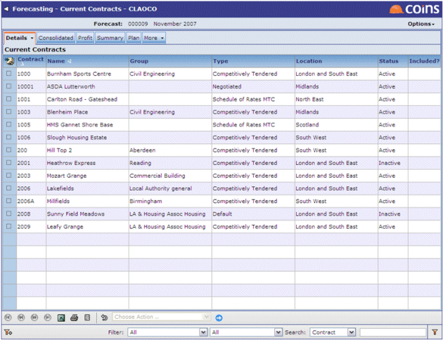
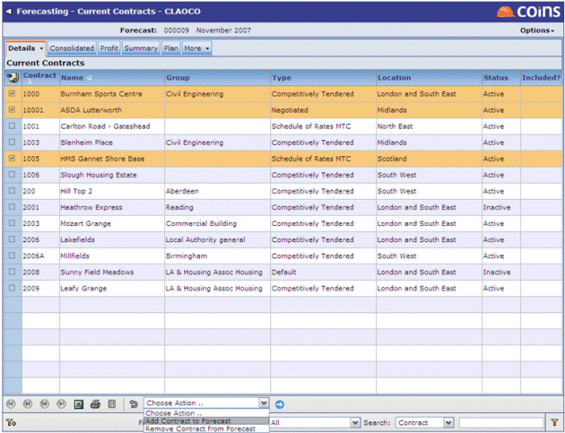

Current s
Current allows data from other that are not developments to be incorporated into a forecast.

To include current :
-
the sites you want to include.
- Select sites for inclusion using the action at the bottom of the screen.

- You can remove sites again by choosing Remove from Forecast.